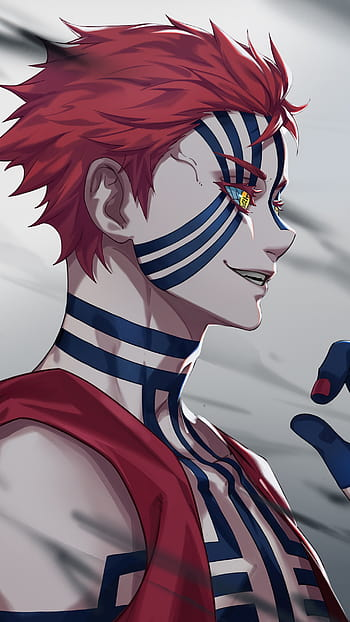
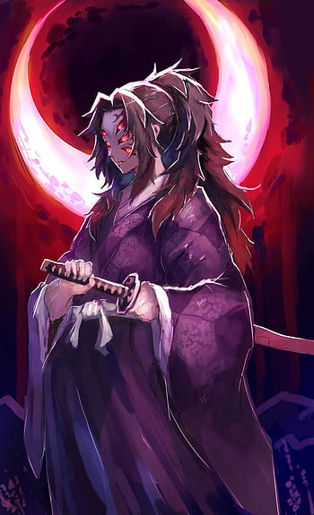
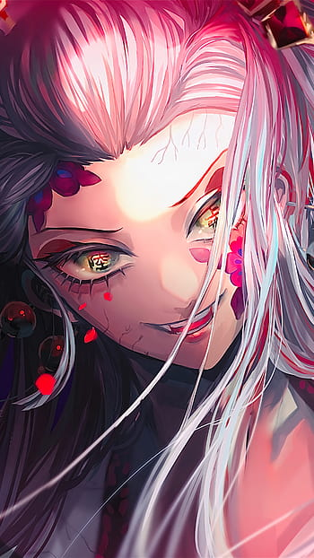

These Upper Moons are formidable adversaries in the Demon Slayer series and provide intense challenges for the main characters.

Kokushibo
Kokushibo is one of the most formidable demons and holds the rank of Upper Moon One in the Twelve Kizuki.
He possesses incredible swordsmanship skills and wields a unique weapon known as the "Moon Breathing" style.

Akaza
Akaza is a powerful demon and previously served as a human named Hakuji, a former member of the Demon Slayer Corps.
He is known for his incredible physical strength, speed, and his ability to regenerate from most injuries.

Daki
Daki and Gyutaro are a pair of demons who act as a single Upper Moon Six together.
Daki appears as a beautiful and seductive woman, while Gyutaro appears as a grotesque demon fused with her.